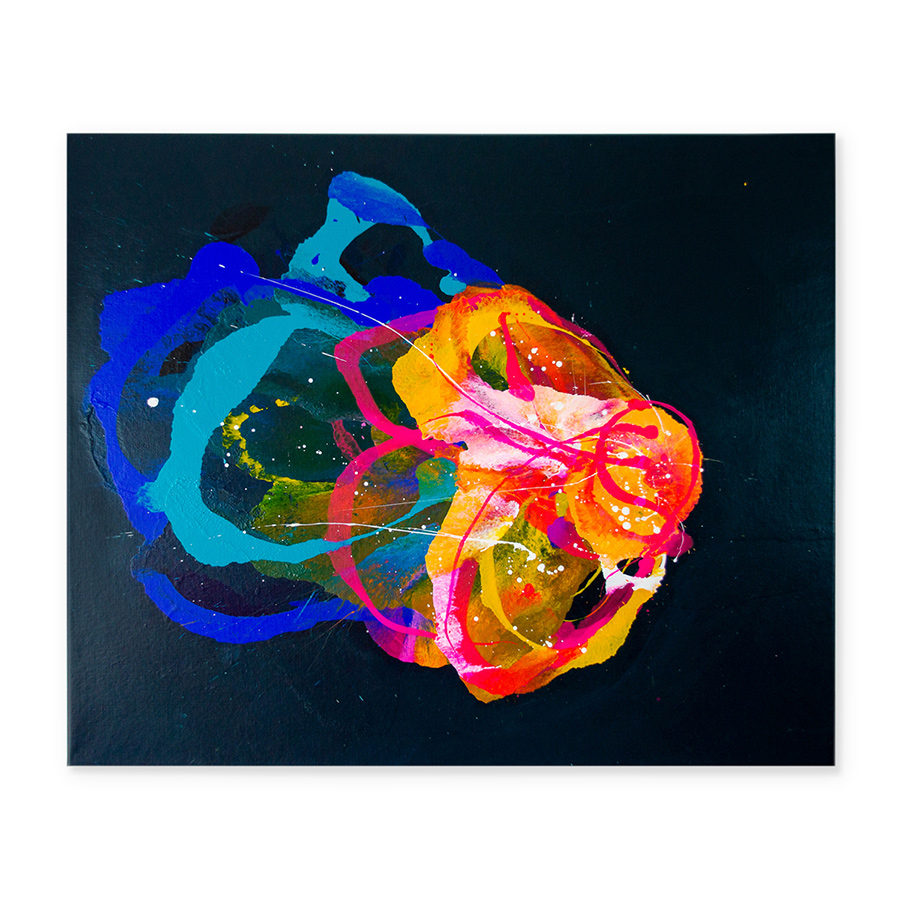

Inspiration
Red inspired
I was asked about this so many times that I decided to write about it. I already mentioned in the post “Red” that, the use of red in my paintings was inspired by works of Ismael Lagares’s that were exhibited in Lanford Gallery. But there were so many other inspirations along the way.

Cave paintings
My previous body of works, the one focused on social interactions, was created with cave paintings in mind. The selection and use of the colour palette as well as composition and structure were a loose reflection and embodiment of newly born occupation. The primal instincts were replaced by communal gatherings for a better survival creating social structure within the community that lasts to this day.
But then I got interested in works of Helen Frankenthaler and it led me to work with fluid paint. I liked the idea that the painting is being discovered while working with it. It was in opposition to the work I was doing before where I had total control of the process.
Fluid paint
Working with fluid paint is entering process with a vague plan in mind and working while reacting to what is happening on the canvases. But that is just working with fluid. I have decided to work with air as well. I liked the idea and the effect that air is having on the paint. The air is beautifully showing the movement of the paint but also creates the ripples that match with the subject of the paintings as well. The fluid comes in waves just like the emotions. And just like the emotions are unpredictable the effects of work with fluid paint are too.
It is an art of compromises.
The subject
The subject of my current work are positive emotions and this is inspired not only by the negative information we are bombarded with by the media but also by learning about the new number one death causality predictions – depression. I had two episodes of depression in my teens and my early adulthood and I believe that the key to changing this prediction is prevention.
I believe that we need to learn as a society to start appreciate one another, to learn to create communities, to feel and to practice gratitude, to make room for emotions, learn empathy, how to create balance in our lives and for that we need to start focusing on positive emotions and aspects of our lives and use our energy to create healthy egos.
Purpose
A lot of issues in our relationships are due to fragile or unstable egos. We think less of ourselves, we dwell on our failures, we focus on our shortcomings, insecurities. I believe many our flaws are created by being stuck in the negative. And I would like to change the focus of the viewer. I would like them to feel energized, feel lighter, focus on strengths, look for positive aspects in their lives, educate themselves in the subject of themselves – as looking in the mirror.
But in general I would say that the inspiration comes from looking at different pieces of art done by different artists. Looking at works done by Ernst Haeckel and after watching some highlights form “Nautilius project” I created - “The creature”. Ismael Lagares Diaz with his beautiful rich red dyptich, Orlanda Bloom with her botanical colour contrasts, Jan Kalab with his neon non-traditional-shape paintings, Nikolaos Schizas with his playful and dimensional brushstroke paintings – these are the artists, some of many, that I follow
